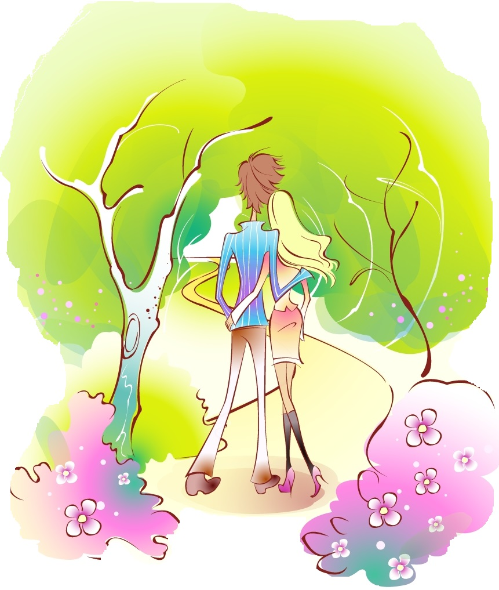

 Франківськ – це передовсім місто-прогулянка. Найбільшою цінністю тут є історична атмосфера центрально-європейського провінційного міста, а не суцільні квартали давньої забудови чи визначні пам'ятки архітектури. Усі давні мандрівники у подорожніх нотатках згадували про велику кількість садів та квітників у цьому місті. Впродовж останніх двох століть міська влада особливо дбала про озеленення вулиць та закладання парків і скверів, якими милуємося й досі. До півгодини легкої ходи від ратуші – і ви вже у розкішному парку Шевченка, а щоб відпочити на лавочці у сквері, взагалі нікуди ходити не треба – вони тут повсюдно.
У Франківську можна почувати себе майже як на острові, адже місто огинають дві ріки. А Карпатські гори та величезний Чорний ліс так близько, що за доброї погоди верхівки гір видно ледь не з кожного балкону. Незважаючи на те, що місто є дуже динамічним, міське життя, на перший погляд, виглядає так, що усі тут тільки те й роблять, що відпочивають, прогулюються та цілими днями сидять у кав'ярнях та десятках вуличних кафе. За 100 років у цьому місті-курорті так нічого й не змінилося! Сліди давньої Речі Посполитої та Австрійської імперії знайдете не лише в архітектурі та плануванні міста, але й побутових звичках, мові та ментальності франківчан. Впродовж кількох століть тут жили разом українці, поляки, євреї, вірмени, німці, чехи та росіяни
У цьому місті, створеному для відпочинку, відкривається все більше оригінальних кав'ярень, стильних барів, ресторанів та закладів традиційної української, а також регіональної — галицької кухні. Адже, будучи частиною великої України, Франківськ є цілком унікальною територією. Це насамперед місто Галичини, яка впродовж багатьох століть належала до іншої цивілізації, ніж решта України.Місто невелике, але тут можна затриматися надовго, милуючись сентиментальними фрагментами європейської архітектури, оглядаючи багату колекцію сакрального живопису художнього музею чи занурюючись у атмосферу мистецьких галерей та чисельних сувенірних крамничок, де продаються унікальні вироби народних майстрів.